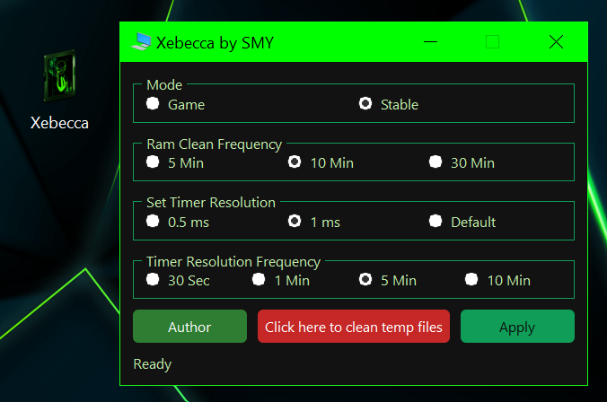

What is Xebecca?
Xebecca is a Windows desktop utility that improves system performance for both high performance and stable everyday use. It provides easy control over advanced power settings, RAM cleaning, timer resolution, and temporary file cleanup through a simple interface.
Game Mode:
Forces maximum CPU performance: 100% minimum/maximum processor state, aggressive boost mode, active cooling, and full core parking disabled. Ideal for squeezing every drop of performance in gaming sessions.
Stable Mode:
Balanced CPU settings: 10% minimum processor state, 90% maximum, efficient aggressive boost, active cooling, and moderate core parking. Perfect for everyday use with reduced heat and power consumption.
RAM Cleaner:
Automatically trims working sets and clears standby memory every 5, 10, or 30 minutes. Sends Windows notifications showing how much memory was freed.
Timer Resolution Control:
Set system timer resolution to 0.5 ms, 1 ms or 2 ms, enforced at intervals (30s, 1 min, 5 min, or 10 min). Keeps latency low for smoother gameplay and responsiveness.
Temp File Cleaner:
One-click cleanup of Windows temporary files. Shows a notification with the amount of storage freed.
